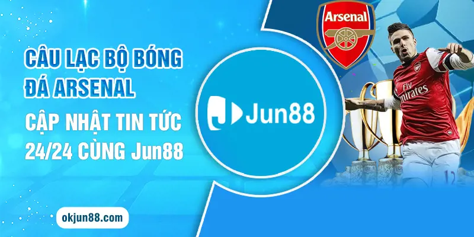
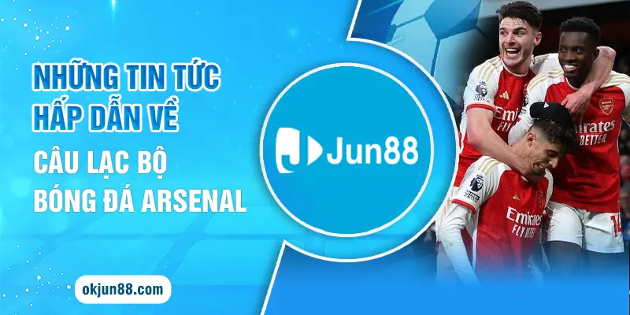
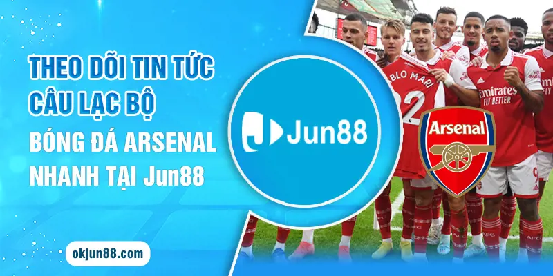

Câu lạc bộ bóng đá Arsenal luôn là tâm điểm chú ý của thể thao thế giới, nhận được sự quan tâm từ hàng triệu người hâm mộ trên thị trường. Nhằm giúp bạn tiện lợi truy cập, dễ dàng nắm bắt các tin tức mới nhất về câu lạc bộ, Jun88 đã liên tục cập nhật và mang đến những thông tin hữu ích nhất. Hội viên hãy cùng theo dõi bài viết hôm nay để khám phá chi tiết hơn nhé.
Một số thông tin thú vị về câu lạc bộ bóng đá Arsenal
Arsenal chính là câu lạc bộ bóng đá chơi chuyên nghiệp và có trụ sở chính tại Holloway thuộc Luân Đôn. Hiện nay, đội tuyển đang tham gia tranh tài tại giải bóng đá Ngoại hạng Anh - Sân chơi có quy mô hàng đầu tại nước Anh. Tên tuổi về đội tuyển luôn nhận được nhiều sự quan tâm từ người hâm mộ trên toàn thế giới với phong độ đẳng cấp cùng thành tích ấn tượng.

Câu lạc bộ bóng đá Arsenal - Cập nhật tin tức 24/24 cùng Jun88
Trong sự nghiệp đồng hành cùng trái bóng tròn của mình, câu lạc bộ bóng đá Arsenal đã thành công giành được 13 chức vô địch quốc gia, 2 Cúp Liên đoàn Anh, 1 Cúp UEFA, 14 Cúp FA (kỷ lục), 16 Siêu cúp Anh, 1 Cúp Liên đoàn Thế kỷ và 1 Cúp Inter-Cities Fairs. Ngoài ra, Arsenal còn đạt thành tích có số trận thắng cấp cao nhiều thứ 2 trong lịch sử bóng đá Anh và là đơn vị duy nhất vô địch thế giới với thành tích bất bại trong suốt 38 vòng đấu.
Cập nhật các tin tức mới nhất về câu lạc bộ bóng đá Arsenal
Thông tin về câu lạc bộ bóng đá Arsenal luôn nhận được nhiều sự quan tâm và thu hút lượng người cập nhật khủng trên toàn cầu. Tiếp theo Jun88 sẽ cập nhật chi tiết những tin tức mới, nóng nhất gửi đến bạn đó là:
Ashley Cole góp mặt tại Đại sảnh danh vọng Premier League
Cho tới thời điểm hiện tại Ashley Cole vẫn được đánh giá là hậu vệ trái có phong độ và thành tích xuất sắc nhất lịch sử Premier League. Chân sút này đã góp công giúp đội tuyển giành được 3 danh hiệu vô địch trong suốt 15 năm chinh phục mier League. Ashley Cole là cái tên thứ 22 chính thức được nằm trong danh sách bước vào Đại sảnh danh vọng.
Câu lạc bộ bóng đá Arsenal chiêu mộ Joao Cancelo vào mùa hè 2024
Câu lạc bộ bóng đá Arsenal chiêu mộ Joao Cancelo vào mùa hè 2024
Trong trường hợp đội tuyển Barca không thể mua đứt hậu vệ Joao Cancelo, câu lạc bộ bóng đá Arsenal sẽ quyết tâm đàm phán để đưa cầu thủ người Bồ đầu quân cùng sân Emirates. Joao Cancelo đã từng là một trong những trụ cột chính của đội tuyển Man City và thường đá tại hai cánh. Mùa giải năm nay, chân sút này đã chơi khá tốt tại Barca đồng thời có quyền mua đứt Cancelo với giá là 40 triệu bảng. Tuy nhiên, Barca đang phải đối mặt với khó khăn về tài chính bởi vậy đây chính là cơ hội mở của Arsenal.
Đội tuyển luôn sẵn sàng chiêu mộ cầu thủ Cancelo trong trường hợp đội tuyển Barca không mua đứt ngôi sao này. Nếu chiêu mộ thành công chắc chắn cầu thủ người Bồ Đào Nha chính là lựa chọn hàng đầu, hứa hẹn sẽ mang tới tương lai mới đầy rực rỡ.
Arsenal chính thức gia nhập cuộc đua giành sao Benfica với MU
CLB Arsenal thực hiện kế hoạch về việc đàm phán với Joao Neves - Đây cũng là nhiệm vụ được MU đưa ra. Tên tuổi của tiền vệ Joao Neves nổi lên sau khi chân sút Enzo Fernandez rời Benfica và đến đồng hành cùng Chelsea. Cầu thủ này được đánh giá đa năng khi có thể chơi tốt tại vị trí tiền vệ trung tâm và cả tiền vệ phòng ngự đồng thời có thể chạy cánh.

Những tin tức hấp dẫn về câu lạc bộ bóng đá Arsenal
Trọng tài bắt trận Arsenal vs Arsenal tại Premier League
Anthony Taylor chính là người đảm nhận vai trò làm trọng tài bắt chính trong trận đấu vào chủ nhật tuần này tại Premier League giữa Man City với Arsenal. Hiện nay, đội tuyển Arsenal đang dẫn đầu trên bảng xếp hạng Premier League mùa giải 2023/24 và cùng điểm số với đối thủ Liverpool. Tuy nhiên cao hơn về hiệu số bàn thắng bại.
Các bước cập nhật tin tức về câu lạc bộ bóng đá Arsenal nhanh
Bạn chỉ cần sử dụng thiết bị thông minh cá nhân truy cập vào website để tiện lợi theo dõi, nắm bắt những tin tức mới nhất về địa chỉ. Dưới đây là chi tiết các thao tác được bài viết tổng hợp và chia sẻ đến hội viên cụ thể như sau:
- Bước 1: Đầu tiên hội viên cần tìm kiếm đường link truy cập chính thống vào trang web của nhà cái Jun88. Lưu ý hiện nay trên thị trường đang xuất hiện nhiều địa chỉ mạo danh chính vì vậy bạn cần xác minh nguồn đảm bảo trước khi truy cập.

Theo dõi tin tức câu lạc bộ bóng đá Arsenal nhanh tại Jun88
- Bước 2: Tiếp theo bạn hãy ấn chọn chuyên mục tin tức, chọn mục thể thao.
- Bước 3: Khách hàng cần tìm kiếm câu lạc bộ Arsenal được cập nhật mới nhất, ấn chọn bài viết mình quan tâm để tiện lợi theo dõi.
Trên đây là tổng hợp chi tiết các tin tức mới nhất về câu lạc bộ bóng đá Arsenal. Hy vọng qua bài viết hôm nay hội viên đã cập nhật, nắm bắt những điều thú vị về đội tuyển. Đồng thời nếu bạn muốn nhanh chóng nắm bắt những thông tin thể thao thú vị hãy nhanh tay truy cập website Jun88 nhé.
>>> Xem thêm: Kèo Tài Xỉu Penalty Là Gì? Hướng Dẫn Cá Độ Chi Tiết Tại Jun88